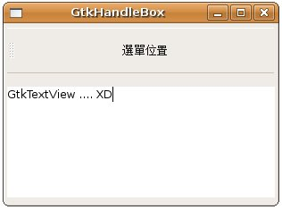
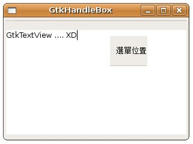

加入GtkHandleBox的元件，是一個可以被拿下來（torn off）的元件，或稱之為所謂的浮動元件，GtkHandleBox是GtkContainer的子類：
GtkContainer
+----GtkBin
+----GtkHandleBox
這樣的拿下（tear off）功能，常見的就是用來製作一個浮動選單，或是一個浮動工具列，下面這個範例是個簡單的示範，您可以了解GtkHandleBox的設定及功用，範例中包括一個放進GtkHandleBox的 GtkLabel，以及一個放到 GtkVBox 的 GtkTextView：
#include <gtk/gtk.h>
int main(int argc, char *argv[]) {
GtkWidget *window;
GtkWidget *vbox;
GtkWidget *handleBox;
gtk_init(&argc, &argv);
window = gtk_window_new(GTK_WINDOW_TOPLEVEL);
gtk_window_set_title(GTK_WINDOW(window), "GtkHandleBox");
gtk_window_set_default_size(GTK_WINDOW(window), 300, 200);
vbox = gtk_vbox_new(FALSE, 5);
handleBox = gtk_handle_box_new();
gtk_handle_box_set_handle_position(
GTK_HANDLE_BOX(handleBox), GTK_POS_LEFT);
gtk_container_add(GTK_CONTAINER(handleBox),
gtk_label_new("\n選單位置\n"));
gtk_box_pack_start(GTK_BOX(vbox), handleBox, FALSE, FALSE, 5);
gtk_box_pack_start(GTK_BOX(vbox), gtk_text_view_new(), TRUE, TRUE, 5);
gtk_container_add(GTK_CONTAINER(window), vbox);
g_signal_connect(GTK_OBJECT(window), "destroy",
G_CALLBACK(gtk_main_quit), NULL);
gtk_widget_show_all(window);
gtk_main();
return 0;
}
gtk_handle_box_set_handle_position()是用來設定浮動元件的停駐位置。下圖是一個執行的結果畫面：

下圖是把那個GtkHJandleBox「拿下來」的一個畫面：

|
|